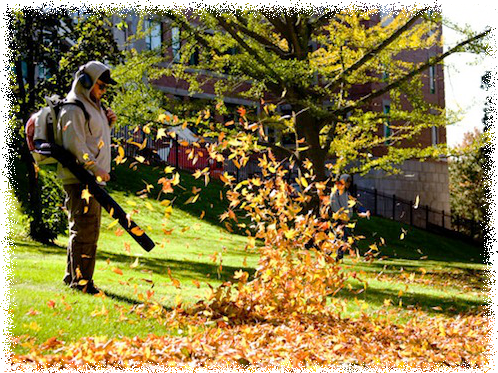

Fall Services:
- Debris Clearing: leaves, branches etc. from lawn and planting bed areas.
- Final Fall Cleanup : remove leaves from turf and planting bed areas.
- Cut Back Perennial and Ornamental Grasses.
- Touch up of new growth.
- Removal of all debris and most of clippings.
- Under certain circumstances, drastic pruning or thinning of material may be necessary due to overgrowth in certain areas or applications.
- Removal or tying up all ornamental grasses.
